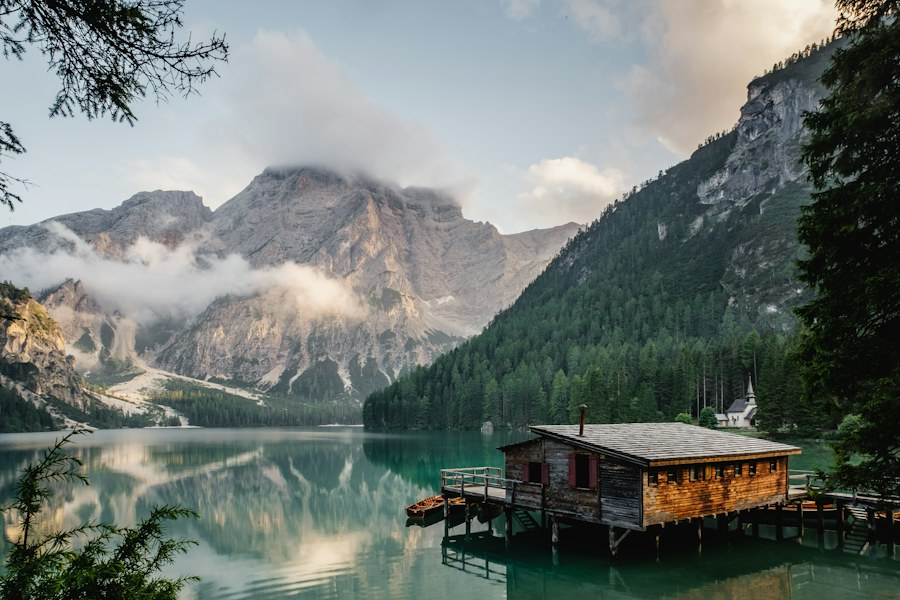
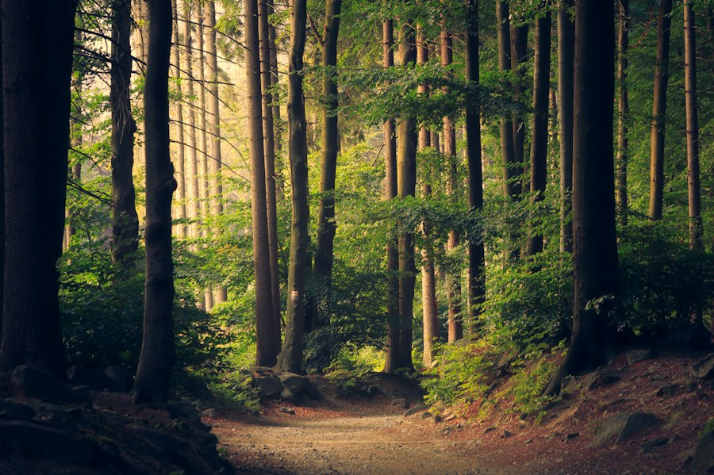
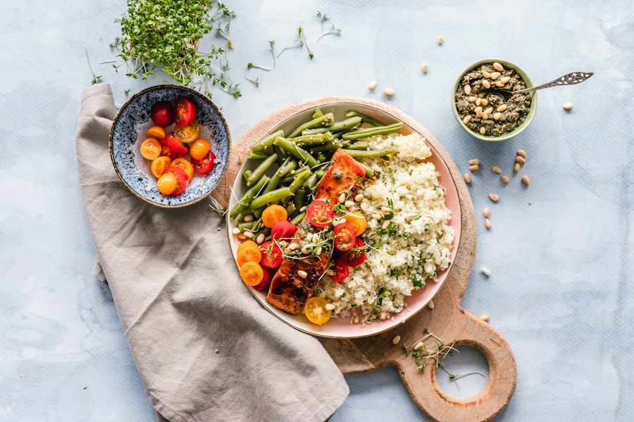

01 / TAKE IT SLOW
Begin with the view
Let the morning clouds lift at their own pace. A warm cup and a little time outdoors make a fine first plan.

No packed itinerary needed. Let the hills set the pace: start with a view, take the path that catches your eye, and come back for something good to eat.
Let the morning clouds lift at their own pace. A warm cup and a little time outdoors make a fine first plan.

Wander beneath the trees, breathe in the forest air and notice the small turns along the way.

Return for home-style cooking, local flavours and the easy company around the table.
Use Samthar as a quieter base for the Eastern Himalayas. Pick one outing, leave room for the road, and ask your hosts about local conditions before setting off.
Deolo Hill, Durpin Dara, Mangal Dham and the town's gardens and heritage corners.
Damsang Fort, Sillery Gaon, Icchey Gaon and scenic roads towards the old Silk Route.
Forest trails, Lava Monastery, Changey Falls and the green highlands around Neora Valley.
Keep the day close with Teesta Valley views, Samthar village walks and nearby hill hamlets.